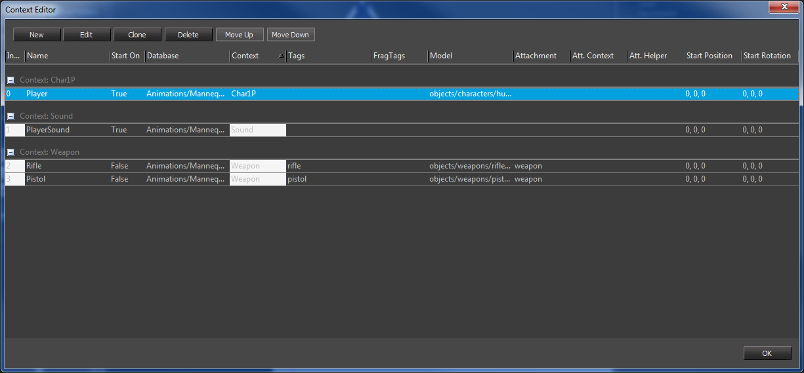
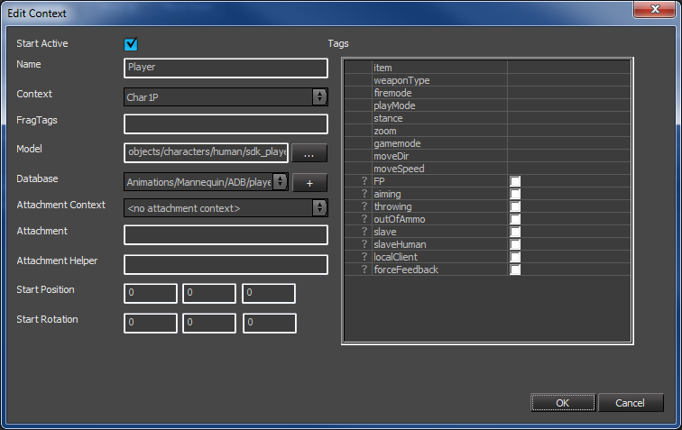

Overview

The context editor is used to edit the current Preview Setup File (xxxPreview.xml).
It tells the editor (among other things) which animation database files and which character models to use in which scope contexts.
You open the Context Editor through the option in the File menu.
Edit Context
